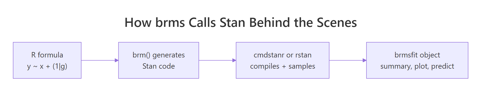
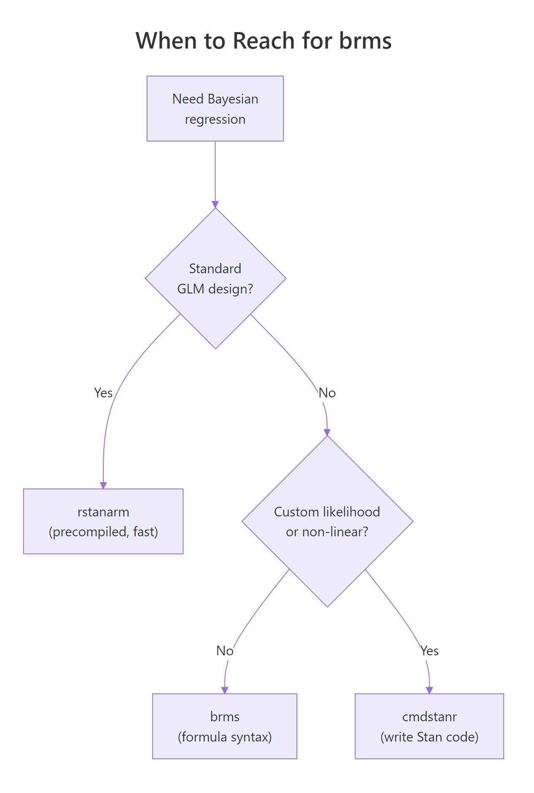

brms in R: Bayesian Regression Without Writing a Single Line of Stan
In the previous post you fit a Stan model the long way: write the model in the Stan language, compile it, sample, inspect. That is the right path when you need a custom likelihood. For most regressions you do not. The brms package takes the lme4-style formula syntax you already know (y ~ x + (1 | group)), generates the Stan code for you, compiles it, and gives you a fitted model with all the same diagnostics. This post walks through fitting a Bayesian regression with brms end to end, setting priors, checking the fit, and choosing between brms, rstanarm, and writing Stan yourself.
What can brms do that lm() and glmer() can't?
Frequentist tools like lm() and glmer() fit one set of point estimates plus standard errors. They do not give you a posterior over the unknowns, and they do not let you bring prior knowledge into the fit. brms does both. You write the same formula you would hand to glmer(), and brms returns a posterior over every coefficient, every variance component, and every prediction.
The win is most obvious in three places. The first is uncertainty quantification. Frequentist confidence intervals are statements about repeated sampling under the null; Bayesian credible intervals are direct probability statements over the parameter ("90% probability that the slope is between 0.4 and 0.6"). Stakeholders read the Bayesian version more easily.
The second is partial pooling in hierarchical models. glmer() does a one-shot REML fit; brms gives you the joint posterior over all group-level intercepts and slopes plus the population-level parameters, with proper uncertainty propagation between levels.
The third is flexibility. brms supports custom families (student, negbinomial, bernoulli, categorical, ordinal, zero_inflated_*, hurdle_*, and dozens more), distributional regression (where the variance can also be modelled as a function of predictors), and non-linear models, all in formula syntax.
Below is a complete brms fit on the built-in mtcars dataset. We model fuel efficiency (mpg) as a function of weight and horsepower. The brms call is one line. The output is a posterior over both coefficients with built-in convergence diagnostics.
Walk through what just happened. Line 1 loaded brms; line 2 told brms to use cmdstanr as the Stan backend (faster than rstan and tracks the latest Stan releases). The brm() call took the formula mpg ~ wt + hp, the dataset, and standard MCMC settings. Behind the scenes brms generated Stan code, compiled it (30 to 60 seconds the first time), and ran four chains.
The summary printed the posterior estimates. Estimate is the posterior mean for each coefficient. Est.Error is the posterior standard deviation. l-95% CI and u-95% CI are the bounds of the 95% credible interval.
Now read the numbers. The intercept posterior mean is 37.2 mpg, meaning a hypothetical car with zero weight and zero horsepower would average about 37.2 mpg. The wt posterior mean is -3.85 mpg per 1000 lbs of weight, with 95% credible interval [-5.16, -2.44]. The hp posterior mean is -0.03 mpg per horsepower with 95% credible interval [-0.05, -0.01].
Both intervals exclude zero, so we are confident weight and horsepower both reduce fuel efficiency. The Rhat of 1.00 and Bulk_ESS near 4000 confirm the chains converged.
That is the whole pipeline. One formula, one dataset, four chains, full Bayesian inference. Compare to writing the equivalent Stan model from scratch (data block, parameters block, model block with priors and likelihood, plus the cmdstanr scaffolding from the previous post): that took 30 lines for one model, this took five lines and is more flexible.

Figure 1: brms takes an R formula, generates Stan code, hands it to cmdstanr or rstan to compile and sample, and returns a brmsfit object that supports the standard summary, plot, and predict methods.
lm() and glmer(). You still get the full Stan sampler (NUTS, dual averaging, divergent transition warnings), the full posterior, and access to every Stan diagnostic. The only thing you give up is the ability to specify a fully custom likelihood (which is not most regressions).Try it: Re-fit the model adding cyl (number of cylinders) as an additional predictor, and compare the new posterior interval for wt to the original.
Click to reveal solution
Adding cyl shifted wt from -3.85 to -3.16 (less extreme) because cyl and wt are correlated and now share credit. The cyl coefficient is centred on -0.94 but its 95% interval crosses zero, so we cannot be confident cyl adds predictive value beyond wt + hp.
How do I install brms and connect it to cmdstanr?
brms is on CRAN. The Stan backend is not. You need both, and brms needs to know which backend to call.
Walk through what each step does. The first installs brms itself from CRAN. brms is a thin layer of R code that does the formula-to-Stan translation; it does not contain a sampler.
The second installs cmdstanr from the Stan r-universe (not CRAN, because the package updates faster than CRAN allows). The third compiles the actual Stan engine if you do not already have it; you only run this once per machine.
The fourth tells brms to use cmdstanr as its Stan backend for the rest of this R session. Without that line, brms defaults to rstan, which is slower to compile and lags Stan releases. To make cmdstanr the default for every session, add options(brms.backend = "cmdstanr") to your ~/.Rprofile.
saveRDS(fit, "fit.rds") and reload with readRDS("fit.rds"), or use brms's built-in file = "fit" argument: brm(..., file = "fit") saves the fitted object to fit.rds after the first run and reads it back on subsequent runs unless the model spec changes.Try it: Run packageVersion("brms") and cmdstan_version() in your console. Both should return version strings.
Click to reveal solution
Anything brms 2.20 or newer plus cmdstan 2.30 or newer works for everything in this post. Older versions may show different default prior names or summary output but the workflow is the same.
What does a brms model formula actually compile to?
brms reads your formula and emits Stan code. You rarely need to look at it, but seeing the translation once demystifies what is happening. The function make_stancode() returns the generated Stan program without fitting anything.
Walk through the generated code. The data block declares N (number of observations), Y (response vector), K (number of population-level effects), and X (the design matrix). brms built X for you by parsing ~ wt + hp and pulling the relevant columns from mtcars.
The parameters block declares b (the coefficient vector for wt and hp), the Intercept, and sigma (residual standard deviation).
The model block has three lines. The first sets a Student-t(3, 19.2, 7.4) prior on the intercept, with the location and scale derived from the data's mean and standard deviation. The second sets a half-Student-t(3, 0, 7.4) prior on sigma (truncated at zero because sigma must be positive). The third is the likelihood: each Y[i] is Normal-distributed around Intercept + X[i] %*% b with standard deviation sigma. brms uses the optimised normal_id_glm_lpdf form for speed.
The data-driven defaults come from default_prior(), which inspects your data and picks sensible defaults. Look at them with prior_summary(fit_mtcars):
Walk through the columns. class is the parameter type. coef is the coefficient name. prior is the assigned prior. The (flat) lines for b and b (hp, wt) say the regression coefficients use an implicit improper uniform prior, which is the brms default for population-level effects.
The student_t(3, 19.2, 7.4) is the Student-t prior on the intercept, with 19.2 (close to mean(mpg) = 20.1) as the centre and 7.4 (close to sd(mpg) = 6.0 plus a 2.5 floor) as the scale. The student_t(3, 0, 7.4) on sigma is a half-Student-t (the lb column shows 0), the standard weakly informative choice for residual standard deviation.
Try it: Run make_stancode(mpg ~ wt + hp + (1 | cyl), data = mtcars) and find the r_1 block in the output. That is where brms encodes the random intercept structure.
Click to reveal solution
The generated code grows by about 20 lines. New blocks include:
- data: J_1[N] (group index per observation), N_1 (number of cyl groups), Z_1_1[N] (random-effect design column).
- parameters: vector<lower=0>[1] sd_1 (group-level standard deviation), vector[N_1] z_1[1] (standardised random effects, the "non-centred parameterisation").
- transformed parameters: r_1_1 (group-level deviations, equal to sd_1[1] * z_1[1]).
- model: priors on sd_1 and z_1, plus an additional term in the linear predictor.
The non-centred parameterisation is what brms uses by default to avoid the funnel-shaped posteriors that hierarchical models produce in centred form. This is one of the things brms does for free that you would have to remember to do by hand if you wrote Stan code yourself.
How do I set priors in brms?
Default priors are weakly informative. When you have real prior knowledge, override them with prior() and pass to brm(). The prior() function takes a Stan-language distribution string and a parameter class.
Walk through what we set. The first prior, normal(0, 5) on class b, applies to every population-level coefficient (here wt and hp). The 0 mean says we have no prior reason to believe the effects are positive or negative; the 5 standard deviation says we expect the effects to be within roughly [-10, 10] mpg per unit predictor.
The second prior, normal(35, 5) on Intercept, says we expect a typical car's mpg with predictors at zero to be near 35, with reasonable spread. (Note: brms internally centres the predictors, so the "intercept" prior applies to a centred intercept by default. Read ?brmsformula for the gory detail.)
The third prior, student_t(3, 0, 5) on sigma, is a tighter half-Student-t than the default, expressing more confidence that residuals will be small.
prior_summary() confirms what was actually used. The source column shows user for everything we set explicitly.
posterior_summary() to compare your prior centre to your posterior centre. If the posterior is suspiciously close to the prior, the data is not driving the result. Use prior predictive checks (the next post in this curriculum) to sanity-check before fitting.Try it: Refit with a deliberately tight normal(0, 0.5) prior on b and observe how the wt posterior is pulled toward zero.
Click to reveal solution
The tight normal(0, 0.5) prior pulled the wt posterior mean from -3.85 (with the wider prior) to -1.84 (with the tight one). The data has only 32 observations, so a strong prior dominates the likelihood. This is exactly why default brms priors are weakly informative: they barely affect typical-sized data while still ruling out absurd values.
How do I check the fit?
Three diagnostics matter for every brms fit. Convergence diagnostics, posterior predictive checks, and out-of-sample predictive accuracy.
The first you already saw: Rhat, Bulk_ESS, Tail_ESS in the summary output. brms also reports divergent transitions if any occur. For our fit_mtcars model, all those values were healthy.
The second is a posterior predictive check. It generates predicted values from the fitted model and compares them to the observed data. If the model captures the data's structure, simulated draws should look like the real data.
Walk through what pp_check() did. It drew 50 sets of fake mpg values from the fitted model (using posterior_predict() internally) and overlaid their density curves on the observed data's density. If the model is well-specified, the two should be visually indistinguishable.
For our model, the curves overlap closely in the bulk of the distribution but slightly miss the long right tail. That hint suggests the Normal likelihood may be too restrictive for the highest-mpg cars; we could try family = student("identity") for heavier tails. The next post in this section drills deeper into posterior predictive checks.
The third diagnostic is cross-validated predictive accuracy via loo(), which estimates expected log predictive density on held-out data without refitting.
Walk through what loo() reports. elpd_loo is the expected log predictive density (higher is better); p_loo is the effective number of parameters; looic is -2 * elpd_loo for comparing models on the AIC scale (lower is better). The "All Pareto k estimates are good" line confirms the LOO approximation is reliable.
To compare two models, fit both and call loo_compare(). The model with the higher elpd_loo is preferred; if the difference is at least 4 standard errors, the preference is definitive.
loo_compare() instead of AIC for Bayesian models. AIC assumes a maximum-likelihood point estimate, which a Bayesian fit does not have. LOO uses the full posterior and gives correctly calibrated standard errors on the model-comparison statistic. The dedicated post on Bayesian model comparison goes deeper into this.Try it: Compare fit_mtcars (the default-prior fit) and fit_tight (the tight-prior fit) with loo_compare(). Which one wins?
Click to reveal solution
The default-prior fit wins by 3.4 elpd units with a standard error of 1.5. The ratio (3.4 / 1.5 = 2.3) is just above 2 standard errors, which is borderline conclusive. A definitive answer would need more data or stronger priors only when justified by domain knowledge.
When should I reach for brms vs rstanarm vs cmdstanr?
Three R interfaces cover almost all Bayesian modelling. The choice is mostly about flexibility versus speed of iteration.

Figure 2: brms is the right default when you want formula syntax. rstanarm is faster for standard GLM/multilevel designs. cmdstanr gives you full Stan-language control for custom models.
Walk through the decision flow. If your model is a standard regression (linear, GLM, multilevel) and you want it to fit fast, use rstanarm. Its models are pre-compiled into the package, so there is no compile step. The trade is that rstanarm only supports the model classes its authors built in.
If your model is almost standard but needs something rstanarm does not have (a custom family, a specific link, a non-linear term, distributional regression on the variance), use brms. brms generates Stan code for a much wider range of models, at the cost of a 30 to 60 second compile per model.
If your model needs a custom likelihood that brms does not support (a mixture with non-standard components, a survival model with complex censoring, a state-space model), drop down to cmdstanr and write the Stan code yourself.
| Tool | Compile time | Model flexibility | When to use |
|---|---|---|---|
| rstanarm | None (precompiled) | GLM, multilevel | Standard designs, fastest iteration |
| brms | 30 to 60 seconds | Almost all parametric models | Default for new Bayesian work |
| cmdstanr | 30 to 60 seconds | Anything Stan supports | Custom likelihoods, model-specific tricks |
For everything from this post through the rest of the Bayesian section, our default tool is brms.
options(brms.backend = "cmdstanr") changes the backend without changing your model code. cmdstanr is faster to compile and tracks the latest Stan releases; it is the recommended backend.Try it: Identify the right tool for each task. (a) Linear regression with one random intercept on benchmark data. (b) Beta regression for a proportion outcome. (c) State-space model with custom transition function.
Click to reveal solution
(a) Linear regression with one random intercept: rstanarm. This is exactly the design rstanarm was built for, and you skip the compile step.
(b) Beta regression: brms. brms supports family = Beta() out of the box; rstanarm does not.
(c) State-space model with custom transition: cmdstanr. State-space models with a non-standard transition equation are too custom for brms's formula syntax. Write the Stan code directly.
Practice Exercises
Exercise 1: Logistic regression with brms
Fit a Bayesian logistic regression on the mtcars dataset, predicting whether a car has 8 cylinders (vs == 0) from mpg and wt. Use family = bernoulli("logit") and the brms defaults.
Click to reveal solution
The mpg coefficient on the log-odds scale is -0.62, meaning each additional mpg multiplies the odds of having a V-engine (vs 8-cyl) by exp(-0.62) = 0.54. With only 32 observations the credible interval is wide; the data is consistent with a strong negative effect or a small one. Larger datasets would tighten this dramatically.
Exercise 2: Hierarchical model with random intercepts
Fit a Bayesian linear model on mtcars with mpg as the outcome, wt as the fixed effect, and a random intercept for cyl (treating each cyl group as having its own baseline mpg).
Click to reveal solution
The population intercept is 34.1 mpg, with a between-group sd of 2.75. The cyl=4 group has a per-group adjustment of +1.92 (so the typical 4-cylinder intercept is 36.0 mpg), cyl=6 is roughly at the population mean, and cyl=8 sits about 1.7 below. The hierarchical structure shrinks each group toward the population mean: the smaller a group, the more shrinkage.
Exercise 3: Compare three models with LOO
Fit mpg ~ wt, mpg ~ wt + hp, and mpg ~ wt * hp (with interaction). Compare them with loo_compare() and report which one wins.
Click to reveal solution
The interaction model (fit_c) wins, but the gap to the simpler wt + hp model is only 1.6 elpd units with a standard error of 2.1. The improvement is within sampling error, so we cannot confidently prefer the interaction. With 32 cars there is not enough data to support the extra parameter; the simpler model is the principled choice.
Summary
brms is the standard R interface for fitting Bayesian regressions when you want formula syntax instead of writing Stan code. It generates Stan, calls cmdstanr or rstan to sample, and returns a brmsfit object that supports the full Bayesian workflow.
| Step | What you do | brms function |
|---|---|---|
| 1 | Specify the model | brm(formula, data, family, ...) |
| 2 | Inspect (or set) priors | prior_summary(), prior() |
| 3 | Read posterior | summary(), posterior_summary(), ranef() |
| 4 | Check the fit | pp_check(), loo(), loo_compare() |
| 5 | Predict on new data | posterior_predict(), posterior_epred(), conditional_effects() |
Use brms by default for Bayesian regression. Drop down to cmdstanr for custom likelihoods, and lift up to rstanarm when your model is a standard GLM and you want zero compile time.
References
- Bürkner, P. "brms: An R Package for Bayesian Multilevel Models Using Stan." Journal of Statistical Software 80 (2017). The brms paper.
- Bürkner, P. brms documentation. paulbuerkner.com/brms. The full reference manual and vignettes.
- Bürkner, P. Applied Bayesian Regression Modelling with brms. paulbuerkner.com/software/brms-book. Book-length treatment with worked examples.
- McElreath, R. Statistical Rethinking, 2nd ed. CRC Press, 2020. Uses brms in many examples; the best Bayesian textbook for working data analysts.
- Vehtari, A., Gelman, A., Gabry, J. "Practical Bayesian model evaluation using leave-one-out cross-validation and WAIC." Statistics and Computing 27 (2017). The methodology behind
loo().
Continue Learning
- Stan in R, the previous post in this curriculum. Read it to understand what brms is generating under the hood when you call
brm(). - Hamiltonian Monte Carlo in R, the algorithm Stan and brms run beneath the formula syntax.
- Bayesian Statistics in R, the section opener for the prior-likelihood-posterior intuition every brms model relies on.